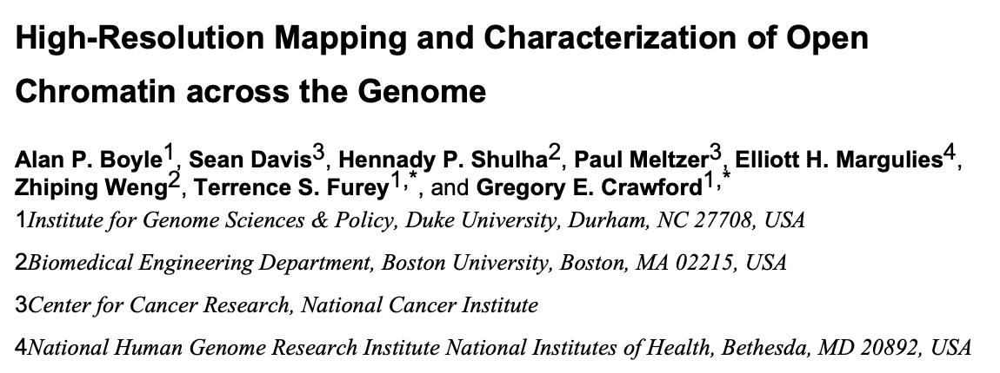
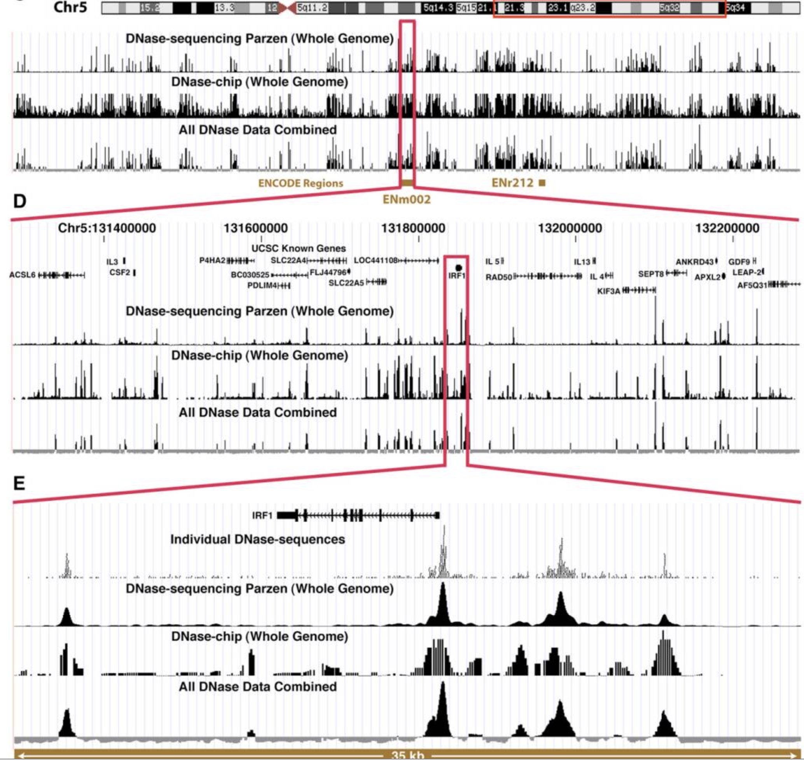
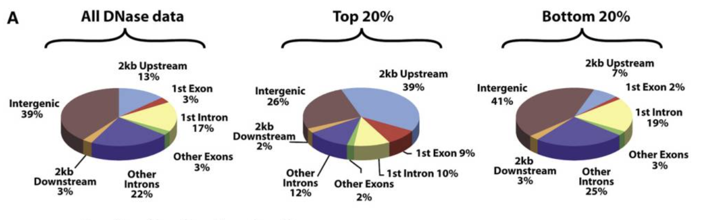
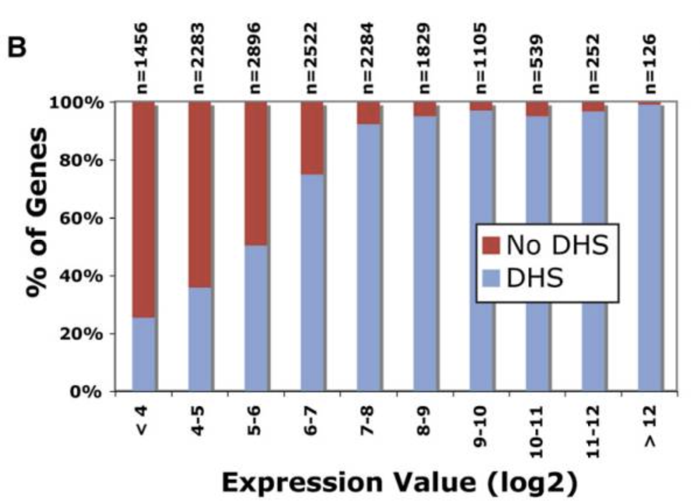

Sample_1 Sample_2 Sample_3 Sample_4 Sample_5
Region_1 210 974 375 404 109
Region_2 328 659 392 824 918
Region_3 617 48 638 904 68
Region_4 533 82 238 217 953
Region_5 883 666 960 642 597
Region_6 769 286 821 283 863
Region_7 265 509 172 357 625
Region_8 431 216 617 75 716
Region_9 329 69 142 713 970
Region_10 820 259 467 23 84Chromatin Accessibility and ATAC-seq
A Primer for C-DATA-2025
Sean Davis, MD, PhD
University of Colorado Anschutz Medical Campus
June 17, 2025
Measuring Chromatin Accessibility
Early Chromatin Accessibility
Figure 1: The first DNase-seq experiment identified open chromatin regions in a genome-wide manner. (Boyle et al. 2008)
DNAse-seq Signal
Figure 2: Successive zoom-in of original DNAse-seq experiment.
DNAse-seq Peaks
Figure 3: Positions of DNase-seq peaks across the genome.
DNAse-seq Peaks and Signal
Figure 4: Relationship of DNAse-seq peaks and gene expression.
Chromatin Accessibility Profiling
| Method | Cell Number | Time | Nucleosome Info | Reference |
|---|---|---|---|---|
| ATAC-seq | 50,000 | ~3 hours | ✓ | (Buenrostro et al. 2013) |
| DNase-seq | 50 million | ~3 days | ✗ | (Boyle et al. 2008) |
| FAIRE-seq | 25 million | ~5 days | ✗ | (Giresi and Lieb 2009) |
Introduction to ATAC-Seq
ATAC-seq first described in Buenrostro et al. (2013).
What is ATAC-seq?
- Assay for Transposase-Accessible Chromatin using sequencing
- Maps genome-wide chromatin accessibility
- Identifies open chromatin regions where regulatory proteins can bind
- Developed by Buenrostro et al. (2013) (Buenrostro et al. 2013)
ATAC-Seq Overview

Figure 5: Assay for transposase-accessible chromatin sequencing (ATAC-Seq) employs a hyperactive form of Tn5 transposase to identify regions of open chromatin, which are important for global epigenetic control of gene expression. Tn5 simultaneously cleaves and adds adapters to nucleosome-free regions of DNA, priming them for sequencing.
Key Applications
- Regulatory element identification: Promoters, enhancers, silencers
- Transcription factor binding: Footprinting analysis
- Chromatin state mapping: Active vs inactive regions
- Developmental studies: Differentiation and cell fate decisions
- Disease research: Cancer epigenomics, genetic variants
Data Analysis Pipeline
Raw Data Processing
- Quality Assessment: FastQC, MultiQC
- Adapter Trimming: Trimmomatic, cutadapt
- Alignment: BWA-MEM, Bowtie2 (langmead2012fast?)
- Post-alignment filtering: Remove duplicates, mitochondrial reads
- File format conversion: SAM → BAM → BED
Quality Control Metrics
Quality Control Metrics
- Experiments should have two or more biological replicates. Assays performed using EN-TEx samples may be exempted due to limited availability of experimental material, but at least two technical replicates are required.
- Each replicate should have 25 million non-duplicate, non-mitochondrial aligned reads for single-end sequencing and 50 million for paired-ended sequencing (i.e. 25 million fragments, regardless of sequencing run type).
- The alignment rate, or percentage of mapped reads, should be greater than 95%, though values >80% may be acceptable.
- The percentage of reads mapping to the mitochondrial genome should be less than 10%.
- Transcription Start Site (TSS) enrichment
Library Complexity
PCR Bottlenecking Coefficient 1 (PBC1)
PBC1=\({M_1/M_{DISTINCT}}\)
\(M_1\): number of genomic locations where exactly one read maps uniquely
\(M_{DISTINCT}\): number of distinct genomic locations to which some read maps uniquely
PCR Bottlenecking Coefficient 2 (PBC2)
PBC2=\(M_1/M_2\)
\(M_1\): number of genomic locations where only one read maps uniquely
\(M_2\): number of genomic locations where two reads map uniquely
Non-Redundant Fraction (NRF)
NRF = \({R_{distinct}}/{R_{total}}\)
\(R_{distinct}\): number of distinct genomic locations to which some read maps uniquely
\(R_{total}\): total number of reads
Common Pitfalls and Solutions
| Problem | Cause | Solution |
|---|---|---|
| Low library complexity | Over-amplification | Optimize PCR cycles |
| High mitochondrial reads | Poor nuclei isolation | Improve protocol |
| Poor TSS enrichment | Degraded chromatin | Fresh samples, cold buffers |
| Batch effects | Processing variation | Randomization, ComBat-seq |
| Low reproducibility | Technical noise | Increase replicates |
Core Analysis Approaches
MACS2 Parameters for ATAC-seq
MACS2 is a widely used peak calling tool for ATAC-seq data. The following parameters are commonly used:
Read shifting

The positive strand reads are shifted by 4 bp and the negative strand by 5 bp due to the 9 base offset introduced by Tn5 transposase.
Differential Accessibility Analysis

Figure 6: Differential Accessibility.
Differential binding detection: DESeq2, edgeR, csaw, DiffBind
Replicates required!
Data preparation
- Region creation
- Count matrix generation
- Normalization
- Differential analysis
Peak annotation

Other
- Motif Analysis
- Functional Annotation
Annotation Strategies
- Promoter assignment: TSS ± 2kb
- Enhancer prediction: Distal peaks + H3K27ac
- Gene assignment: Nearest gene, regulatory domains
- Pathway analysis: GO, KEGG, Reactome
Single-cell ATAC-seq (scATAC-seq)
Overview of scATAC-seq
flowchart TD
A[Single-cell ATAC-seq] --> B[Cell Isolation]
B --> C[Transposition with Tn5]
C --> D[Library Preparation]
D --> E[Sequencing]
scATAC-seq Workflow
flowchart TD
A[scATAC-seq Data] --> B[Quality Control]
B --> C[Alignment]
C --> D[Binning and Counting]
D --> E[Cell Barcode Assignment]
E --> F[Dimensionality Reduction]
F --> G[Clustering]
Clustering

Assigning cell types to clusters involves “mapping” back into RNA space. Multiple approaches exist that utilize biological knowledge or ATAC-seq signal information.
Aggregating Reads from Single Cells

Aggregating reads to generate “pseudobulk” samples used for peak-calling, differential analysis, and cell type identification.
Full stack analysis
Key Tools:
- ArchR
- Signac
- SnapATAC
- And the list goes on…
Practical Considerations
Experimental Design Principles
- Biological replicates: Minimum 3 per condition
- Technical replicates: Generally not necessary
- Batch effects: Randomize sample processing
- Cell number: 50,000 optimal for bulk ATAC-seq
Computational Infrastructure
Hardware Requirements
- CPU: 16+ cores recommended
- RAM: 32+ GB for human genome
- Storage: 1+ TB for large projects
- GPU: Optional for deep learning
Software Ecosystem
- Alignment: BWA-MEM, Bowtie2
- Peak calling: MACS2, HOMER
- Visualization: IGV, deepTools
- Analysis: R/Bioconductor, Python
Workflow Management
# Example Snakemake workflow
rule all:
input:
"results/multiqc_report.html",
"results/differential_peaks.bed"
rule trim_adapters:
input:
r1="data/{sample}_R1.fastq.gz",
r2="data/{sample}_R2.fastq.gz"
output:
r1="trimmed/{sample}_R1_trimmed.fastq.gz",
r2="trimmed/{sample}_R2_trimmed.fastq.gz"
shell:
"trimmomatic PE {input.r1} {input.r2} {output.r1} {output.r2}"
rule align:
input:
r1="trimmed/{sample}_R1_trimmed.fastq.gz",
r2="trimmed/{sample}_R2_trimmed.fastq.gz"
output:
"aligned/{sample}.bam"
shell:
"bwa mem genome.fa {input.r1} {input.r2} | samtools sort -o {output}"Tools: Snakemake, Nextflow, WDL (“Snakemake–a Scalable Bioinformatics Workflow Engine - PubMed” 2011)
Reproducibility Best Practices
- Version control: Git for code, DVC for data
- Environment management: Conda, Docker, Singularity
- Documentation: Literate programming with R Markdown/Quarto
- Code sharing: GitHub, Zenodo for long-term archival
- Data repositories: GEO, SRA, ENCODE portal
Online Resources
- ENCODE Portal: https://www.encodeproject.org/
- Bioconductor workflows: https://bioconductor.org/packages/ATACseqQC/
- Galaxy Training: https://training.galaxyproject.org/training-material/topics/epigenetics/
- nf-core/atacseq: https://nf-co.re/atacseq
References
Boyle, Alan P, Sean Davis, Hennady P Shulha, Paul Meltzer, Elliott H Margulies, Zhiping Weng, Terrence S Furey, and Gregory E Crawford. 2008. “High-Resolution Mapping and Characterization of Open Chromatin Across the Genome.” Cell 132 (2): 311–22. https://doi.org/10.1016/j.cell.2007.12.014.
Buenrostro, Jason D, Paul G Giresi, Lisa C Zaba, Howard Y Chang, and William J Greenleaf. 2013. “Transposition of Native Chromatin for Fast and Sensitive Epigenomic Profiling of Open Chromatin, DNA-binding Proteins and Nucleosome Position.” Nature Methods 10 (12): 1213–18. https://doi.org/10.1038/nmeth.2688.
Giresi, Paul G., and Jason D. Lieb. 2009. “Isolation of Active Regulatory Elements from Eukaryotic Chromatin Using FAIRE (Formaldehyde Assisted Isolation of Regulatory Elements).” Methods (San Diego, Calif.) 48 (3): 233–39. https://doi.org/10.1016/j.ymeth.2009.03.003.
“Snakemake–a Scalable Bioinformatics Workflow Engine - PubMed.” 2011. https://pubmed.ncbi.nlm.nih.gov/22908215/.